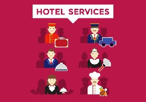

Specialized Services
- Free access to changing rooms and bathroom facilities for temple patrons who have traveled far and need to change to and from church clothes
- A playroom and low-cost, short-term babysitting services for the children of patrons
- Long-term stay accommodations in kitchenette suites for full-time temple missionaries
- Temple history themed reception and sitting area
- A wedding reception hall that can be easily customized with a simple catering menu and kitchen access for food preparation and serving
- A family search center that supports family search and ordinance work
Free Amenities
- Breakfast
- Exercise/workout room
- Indoor Pool
- WiFi high-speed internet access and smart TVs
- Parking
- Temple shuttle
- Family history consultation and family ordinance card service
